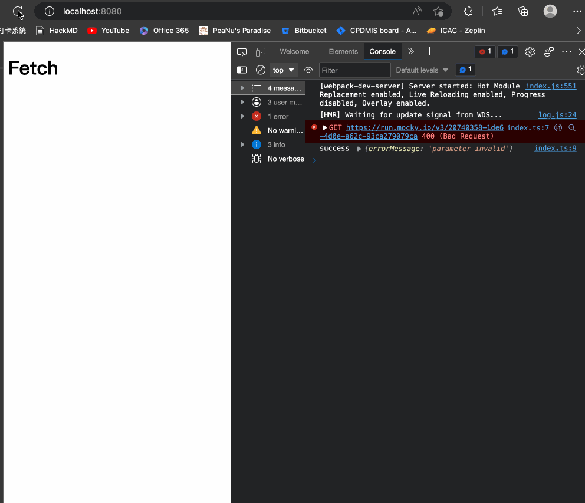

錯誤處理也很重要。
簡述
當 axios 用習慣了以後再回來碰 fetch 時，常常會忘記 fetch 本身的一些性質，所以這篇想特別記錄一下使用 fetch 時要注意的幾件事情。
先來看一個簡單的範例：
1 | const url400 = 'https://run.mocky.io/v3/20740358-1de6-4d0e-a62c-93ca279079ca' |
附註：這邊的 url400 是用 mocky 來產生的，有興趣的話可以自己到網站中建立一個 API 來測試。
這個範例是去打一個會拿到 status: 400 的 API，並且會回傳底下訊息：
1 | { |
接下來要問你一個問題：
既然會拿到
400，那最後會執行的應該是catch((error) => console.log('error', error))這段對吧？
先自己想想看，想好後再往下滑。
– 防雷線 –
– 防雷線 –
– 防雷線 –
– 防雷線 –
– 防雷線 –
– 防雷線 –
– 防雷線 –
– 防雷線 –
– 防雷線 –
答案是：不會，一樣會執行 .then() 的部分。

這是 fetch 比較特別的地方，就是對它而言：
- 除非是遇到網路錯誤（server 沒辦法回傳 response），否則這個 Promise 一律會被
resolve - 除非是遇到網路錯誤（server 沒辦法回傳 response），否則這個 Promise 一律會被
resolve - 除非是遇到網路錯誤（server 沒辦法回傳 response），否則這個 Promise 一律會被
resolve
也就是說不管是 400、401 或甚至是 500，這個 Promise 最後都還是會 resolve，所以會被執行的依然是 .then 而不是 .catch。
正確的處理方式
所以拿剛剛的例子來說，如果我希望對 status 不是 200 的時候做錯誤處理的話，要在 .then 裡面做判斷：
1 | function example2() { |
這樣子就可以正確的進入 .catch 並拿到錯誤訊息了：